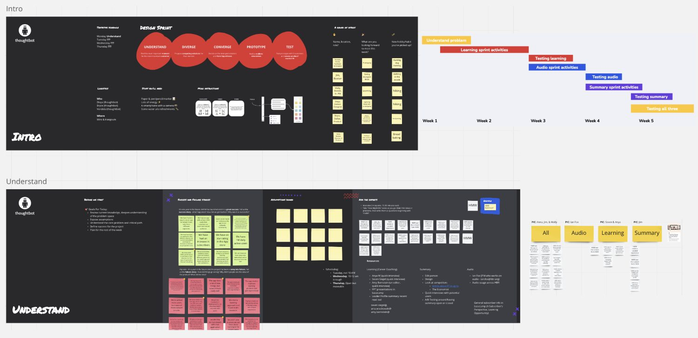
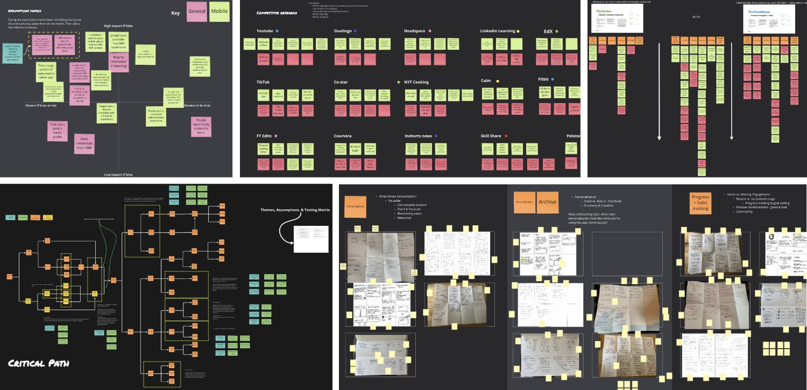
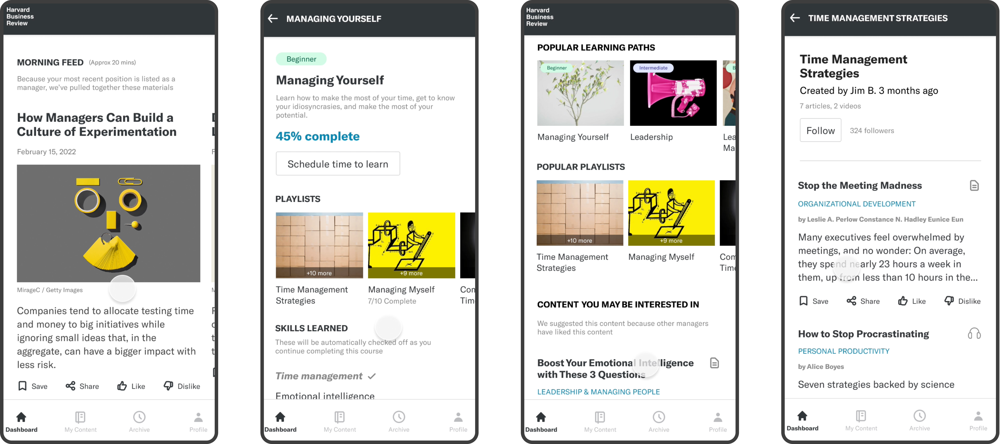
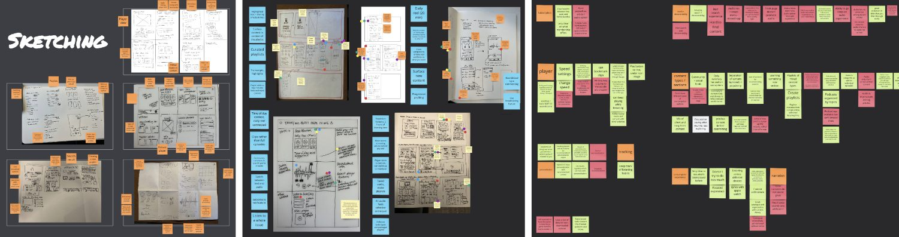
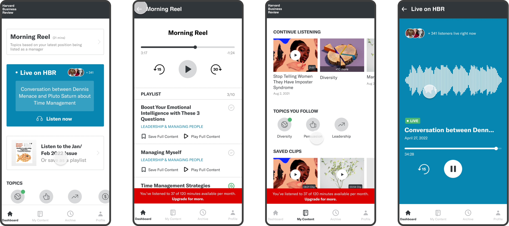
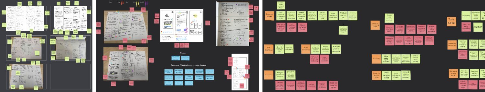
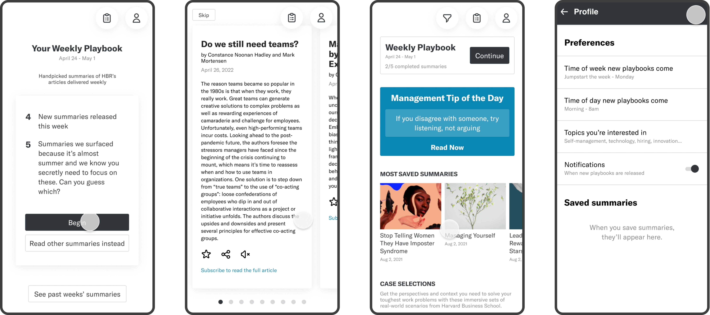

A Sprint to Reach a New Generation
I was part of a consulting team — another designer and a project manager — facilitating a design sprint for Harvard Business Review (HBR). The goal was to explore new mobile concepts that could attract a younger, more global audience through a premium, brand-worthy experience.
Three Directions Worth Exploring
Research indicated that younger HBR users wanted a more integrated and modern mobile experience — something the existing app didn't deliver. Building on insights from a prior sprint conducted by our team, we identified three promising directions for deeper exploration:
Learning-Focused
Support professional growth through structured content.
Audio-First
Make learning more flexible and on-the-go.
Summaries
Deliver concise, actionable insights from HBR content.
Our objective was to prototype and test each concept with users, determine which resonated most with younger audiences, and guide future product strategy.
Three Mini-Sprints, One Rhythm
We began by reviewing existing research to understand HBR's product landscape, audience needs, and previous design work. We also ran workshops to define key personas, conduct a quick competitor analysis, and align on success metrics for the sprint.
We then structured the project into three mini-sprints — one for each concept. Each followed a consistent flow, and at the end we ran a final integrated, moderated user test to evaluate and compare all three.

The Learning Concept
HBR users have shown interest in deep skill development and structured learning. This concept explored how existing HBR content could be reimagined into guided learning paths.
- Seamless and intuitive onboarding experience
- Progressive profiling to personalize learning
- A dedicated space to practice and track progress
- Learning paths, playlists, and habit-building features


The Audio Concept
The second sprint focused on an audio-first experience, making listening the core way to engage with HBR content.
- Desire for a variety of audio formats (articles, discussions, clips)
- Ability to create, save, and share audio clips
- Clips serving as the primary content unit
- Option to view transcripts alongside audio
- Interest in HBR Live and limited free content before a paywall


The Summary Concept — "Playbook"
The final sprint, called Playbook, explored a summary-based experience — surfacing executive summaries of HBR articles on a weekly cadence.
- Personalization and tailored recommendations
- Social features to encourage sharing and engagement
- A consistent tone and feel aligned with HBR's brand
- A weekly rhythm for digestible content
- Option to consume as text or audio summaries based on preference


Testing All Three, Side by Side
We conducted 11 user interviews via UserTesting.com with a mix of current HBR subscribers and new users. Each participant explored all three prototypes, providing feedback on usability, interest, and potential engagement frequency.
The design's ability to build a daily habit of HBR content consumption.
Delight and satisfaction metrics indicating likelihood of continued use and subscription conversion.
What Users Told Us
Users responded very positively, noting they would likely use the app in short bursts — before work, during lunch, or after hours.
Most preferred a mobile experience for quick, daily updates, while reserving deep learning for desktop or web.
For the learning concept, users valued structured paths, quizzes, and practice tools to reinforce content.
The summary concept was the most popular, with many also appreciating the audio features for flexibility.
A Hybrid Path Forward
We suggested focusing on a hybrid approach combining the summary and audio features as a lightweight, high-engagement offering, while developing the learning concept later as a separate, more in-depth experience. We also recommended a follow-up testing round after iterative refinements.
What We Delivered
A user-validated prototype for a new React Native mobile app, complete with insights on audience preferences and concept viability.
A clear direction for HBR to engage a younger, global audience through mobile.
An open door for continued collaboration when HBR is ready to move into the next phase of design and development.